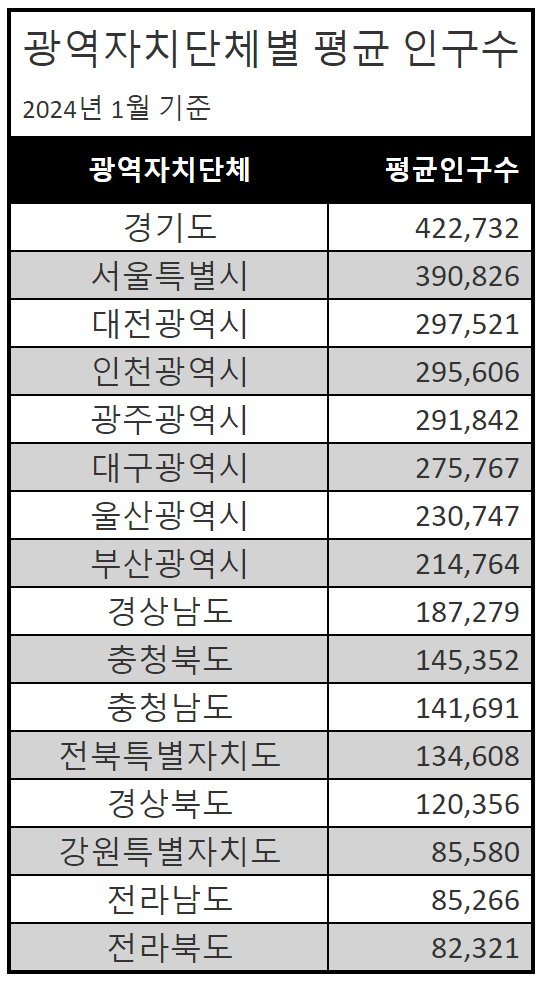

club <- read.table("SocietyClubVillage.txt", header=T)[엑셀] 실습하기
- 자료의 정리 (sasa메일로 로그인해야 내용을 볼 수 있습니다.)
[R기초] 실습하기
R 프로그램을 사용하는 방법을 배워봅시다.
오른쪽 위 Link를 클릭하여 프로그램 설치안내를 읽고, 프로그램을 설치하세요.
R 프로그램을 더 공부하고 싶은 학생은 아래 사이트를 참고하세요.
- 데이터 사이언스를 위한 R 프로그래밍
데이터 불러오기
- 데이터가 들어있는 텍스트 화일을 불러오기
막대그림
- 범주형 자료의 막대그래프 그리기
table(club)동호인마을
미술 역술 영화 음악
4 1 3 5 freq = c(table(club), sum(table(club))) #합계를 더하기
freq미술 역술 영화 음악
4 1 3 5 13 addmargins(table(club)) #오른쪽에 합계란 더하기동호인마을
미술 역술 영화 음악 Sum
4 1 3 5 13 prop.table(table(club)) #상대도수로 나타내기(합계가 1이 됨)동호인마을
미술 역술 영화 음악
0.30769231 0.07692308 0.23076923 0.38461538 prop.table(table(club))*100 #백분율로 나타내기동호인마을
미술 역술 영화 음악
30.769231 7.692308 23.076923 38.461538 rel_freq = c(round(prop.table(table(club))*100, digit=1),sum(round(prop.table(table(club))*100, digit=1))) #소수첫째자리에서 반올림하기
freq_table_of_club = rbind(freq, rel_freq)
colnames(freq_table_of_club)[5] = '합계' #다섯번째 열에 이름주기
freq_table_of_club 미술 역술 영화 음악 합계
freq 4.0 1.0 3.0 5.0 13.0
rel_freq 30.8 7.7 23.1 38.5 100.1barplot(table(club),xlab="동호인 마을", main="요약")파이그림
- 범주형 자료의 파이그래프 그리기
pie(table(club),xlab="동호인 마을", main="요약")
기술통계량
- 데이터 불러온 후, 데이터 확인하기
body <- read.table("BodyWeight.txt", header=T)
head(body) 몸무게
1 68.5
2 77.3
3 62.5
4 73.0
5 72.6
6 61.0- 아래 명령어를 입력하면서 뜻 생각해보기, 명령어 안에서 줄바꿈은 shift+엔터를 쳐야 함
description <- function(x){
n=sum(is.na(x)) #결측치의 개수를 셈. FALSE==0, TRUE==1
min=min(x, na.rm = TRUE) # "na.rm=TRUE"는 결측치를 제거 후 구하라는 것임
x[is.na(x)] = mean(x, na.rm=T) #결측값을 평균으로 대체하는 명령
mx=mean(x)
se=sd(x)/sqrt(length(x))
med=median(x)
mode=as.numeric(names(which.max(table(x))))
sx=sd(x)
vx=var(x)
kurt=mean((x-mean(x))^4)/(mean((x-mean(x))^2))^2-3 #첨도, install.packages('e1071'), library(e1071), skewness(변수명, na.rm=T)라고 해도 구할 수 있음.
skew=mean((x-mean(x))^3)/(mean((x-mean(x))^2))^1.5 #왜도, kurtosis(변수명, na.rm=T)
range=max(x)-min(x) # range()라는 명령어를 쓰면 최소값과 최댓값을 동시 출력함
quantiles=quantile(x)
iqr=IQR(x) # IQR = Q3 - Q1
cat("column1","\n",
"결측값의 수", n, "\n",
"최솟값", min,"\n",
"평균", mx,"\n",
"표준오차",se,"\n",
"중앙값",med,"\n",
"최빈값",mode,"\n",
"표준편차",sx,"\n",
"분산",vx,"\n",
"첨도",kurt,"\n",
"왜도",skew,"\n", # 0이 나오면 평균을 중심으로 좌우대칭, 양수이면 오른쪽으로 긴꼬리임
"범위",range,"\n", # 0이면 표준정규분포와 뾰족한 정도가 동일, 양수이면 표준정규분포보다 봉우리가 높고 뾰족함
"사분위수",quantiles,"\n",
"사분위수범위",iqr,"\n",
"최솟값",min(x),"\n",
"최댓값",max(x),"\n",
"합",sum(x),"\n",
"관측수",length(x),"\n")
}
description(body$몸무게)column1
결측값의 수 0
최솟값 55.6
평균 68.498
표준오차 0.4974663
중앙값 68.5
최빈값 71.5
표준편차 4.974663
분산 24.74727
첨도 0.1990144
왜도 0.1898622
범위 27.4
사분위수 55.6 64.5 68.5 71.75 83
사분위수범위 7.25
최솟값 55.6
최댓값 83
합 6849.8
관측수 100 기술통계량 패키지 이용하기
- dlookr 패키지가 없으면 주석에 있는 명령어로 설치하고, 패키지를 불러온 후 describe 명령어 입력하기
# devtools::install_github("choonghyunryu/dlookr")
library(dlookr)Registered S3 methods overwritten by 'dlookr':
method from
plot.transform scales
print.transform scales
Attaching package: 'dlookr'The following object is masked from 'package:base':
transformdescribe(body)# A tibble: 1 × 26
described_variables n na mean sd se_mean IQR skewness kurtosis
<chr> <int> <int> <dbl> <dbl> <dbl> <dbl> <dbl> <dbl>
1 몸무게 100 0 68.5 4.97 0.497 7.25 0.193 0.272
# ℹ 17 more variables: p00 <dbl>, p01 <dbl>, p05 <dbl>, p10 <dbl>, p20 <dbl>,
# p25 <dbl>, p30 <dbl>, p40 <dbl>, p50 <dbl>, p60 <dbl>, p70 <dbl>,
# p75 <dbl>, p80 <dbl>, p90 <dbl>, p95 <dbl>, p99 <dbl>, p100 <dbl>도수분포표, 히스토그램 그리기
- 숫자형 자료의 도수분포표와 히스토그램 그리기
class <- seq(55,85,5)
frequency <- as.numeric(rep("",length(class)))
freq.table <- cbind(class,frequency)
for(i in 1:length(class)) freq.table[i,2] <- length(body[body>(class[i]-5)&body <= class[i]])
freq.table #도수분포표 그리기 class frequency
[1,] 55 0
[2,] 60 3
[3,] 65 24
[4,] 70 35
[5,] 75 31
[6,] 80 4
[7,] 85 3hist(body$몸무게) #히스토그램 그리기
hist(body$몸무게, breaks = c(50,60,70,80,90)) #간격을 지정해서 히스토그램 그리기hist(body$몸무게, freq = FALSE, ylim = c(0, 0.08), ylab = "relative freq", xlab = "Weight", main = "Histogram of Weight", col = colors()[536]) #상대도수로 그리고, y축 범위 및 이름 설정하기- R에서 사용할 수 있는 색
colors() #총 657개의 색 이름이 나옴. [1] "white" "aliceblue" "antiquewhite"
[4] "antiquewhite1" "antiquewhite2" "antiquewhite3"
[7] "antiquewhite4" "aquamarine" "aquamarine1"
[10] "aquamarine2" "aquamarine3" "aquamarine4"
[13] "azure" "azure1" "azure2"
[16] "azure3" "azure4" "beige"
[19] "bisque" "bisque1" "bisque2"
[22] "bisque3" "bisque4" "black"
[25] "blanchedalmond" "blue" "blue1"
[28] "blue2" "blue3" "blue4"
[31] "blueviolet" "brown" "brown1"
[34] "brown2" "brown3" "brown4"
[37] "burlywood" "burlywood1" "burlywood2"
[40] "burlywood3" "burlywood4" "cadetblue"
[43] "cadetblue1" "cadetblue2" "cadetblue3"
[46] "cadetblue4" "chartreuse" "chartreuse1"
[49] "chartreuse2" "chartreuse3" "chartreuse4"
[52] "chocolate" "chocolate1" "chocolate2"
[55] "chocolate3" "chocolate4" "coral"
[58] "coral1" "coral2" "coral3"
[61] "coral4" "cornflowerblue" "cornsilk"
[64] "cornsilk1" "cornsilk2" "cornsilk3"
[67] "cornsilk4" "cyan" "cyan1"
[70] "cyan2" "cyan3" "cyan4"
[73] "darkblue" "darkcyan" "darkgoldenrod"
[76] "darkgoldenrod1" "darkgoldenrod2" "darkgoldenrod3"
[79] "darkgoldenrod4" "darkgray" "darkgreen"
[82] "darkgrey" "darkkhaki" "darkmagenta"
[85] "darkolivegreen" "darkolivegreen1" "darkolivegreen2"
[88] "darkolivegreen3" "darkolivegreen4" "darkorange"
[91] "darkorange1" "darkorange2" "darkorange3"
[94] "darkorange4" "darkorchid" "darkorchid1"
[97] "darkorchid2" "darkorchid3" "darkorchid4"
[100] "darkred" "darksalmon" "darkseagreen"
[103] "darkseagreen1" "darkseagreen2" "darkseagreen3"
[106] "darkseagreen4" "darkslateblue" "darkslategray"
[109] "darkslategray1" "darkslategray2" "darkslategray3"
[112] "darkslategray4" "darkslategrey" "darkturquoise"
[115] "darkviolet" "deeppink" "deeppink1"
[118] "deeppink2" "deeppink3" "deeppink4"
[121] "deepskyblue" "deepskyblue1" "deepskyblue2"
[124] "deepskyblue3" "deepskyblue4" "dimgray"
[127] "dimgrey" "dodgerblue" "dodgerblue1"
[130] "dodgerblue2" "dodgerblue3" "dodgerblue4"
[133] "firebrick" "firebrick1" "firebrick2"
[136] "firebrick3" "firebrick4" "floralwhite"
[139] "forestgreen" "gainsboro" "ghostwhite"
[142] "gold" "gold1" "gold2"
[145] "gold3" "gold4" "goldenrod"
[148] "goldenrod1" "goldenrod2" "goldenrod3"
[151] "goldenrod4" "gray" "gray0"
[154] "gray1" "gray2" "gray3"
[157] "gray4" "gray5" "gray6"
[160] "gray7" "gray8" "gray9"
[163] "gray10" "gray11" "gray12"
[166] "gray13" "gray14" "gray15"
[169] "gray16" "gray17" "gray18"
[172] "gray19" "gray20" "gray21"
[175] "gray22" "gray23" "gray24"
[178] "gray25" "gray26" "gray27"
[181] "gray28" "gray29" "gray30"
[184] "gray31" "gray32" "gray33"
[187] "gray34" "gray35" "gray36"
[190] "gray37" "gray38" "gray39"
[193] "gray40" "gray41" "gray42"
[196] "gray43" "gray44" "gray45"
[199] "gray46" "gray47" "gray48"
[202] "gray49" "gray50" "gray51"
[205] "gray52" "gray53" "gray54"
[208] "gray55" "gray56" "gray57"
[211] "gray58" "gray59" "gray60"
[214] "gray61" "gray62" "gray63"
[217] "gray64" "gray65" "gray66"
[220] "gray67" "gray68" "gray69"
[223] "gray70" "gray71" "gray72"
[226] "gray73" "gray74" "gray75"
[229] "gray76" "gray77" "gray78"
[232] "gray79" "gray80" "gray81"
[235] "gray82" "gray83" "gray84"
[238] "gray85" "gray86" "gray87"
[241] "gray88" "gray89" "gray90"
[244] "gray91" "gray92" "gray93"
[247] "gray94" "gray95" "gray96"
[250] "gray97" "gray98" "gray99"
[253] "gray100" "green" "green1"
[256] "green2" "green3" "green4"
[259] "greenyellow" "grey" "grey0"
[262] "grey1" "grey2" "grey3"
[265] "grey4" "grey5" "grey6"
[268] "grey7" "grey8" "grey9"
[271] "grey10" "grey11" "grey12"
[274] "grey13" "grey14" "grey15"
[277] "grey16" "grey17" "grey18"
[280] "grey19" "grey20" "grey21"
[283] "grey22" "grey23" "grey24"
[286] "grey25" "grey26" "grey27"
[289] "grey28" "grey29" "grey30"
[292] "grey31" "grey32" "grey33"
[295] "grey34" "grey35" "grey36"
[298] "grey37" "grey38" "grey39"
[301] "grey40" "grey41" "grey42"
[304] "grey43" "grey44" "grey45"
[307] "grey46" "grey47" "grey48"
[310] "grey49" "grey50" "grey51"
[313] "grey52" "grey53" "grey54"
[316] "grey55" "grey56" "grey57"
[319] "grey58" "grey59" "grey60"
[322] "grey61" "grey62" "grey63"
[325] "grey64" "grey65" "grey66"
[328] "grey67" "grey68" "grey69"
[331] "grey70" "grey71" "grey72"
[334] "grey73" "grey74" "grey75"
[337] "grey76" "grey77" "grey78"
[340] "grey79" "grey80" "grey81"
[343] "grey82" "grey83" "grey84"
[346] "grey85" "grey86" "grey87"
[349] "grey88" "grey89" "grey90"
[352] "grey91" "grey92" "grey93"
[355] "grey94" "grey95" "grey96"
[358] "grey97" "grey98" "grey99"
[361] "grey100" "honeydew" "honeydew1"
[364] "honeydew2" "honeydew3" "honeydew4"
[367] "hotpink" "hotpink1" "hotpink2"
[370] "hotpink3" "hotpink4" "indianred"
[373] "indianred1" "indianred2" "indianred3"
[376] "indianred4" "ivory" "ivory1"
[379] "ivory2" "ivory3" "ivory4"
[382] "khaki" "khaki1" "khaki2"
[385] "khaki3" "khaki4" "lavender"
[388] "lavenderblush" "lavenderblush1" "lavenderblush2"
[391] "lavenderblush3" "lavenderblush4" "lawngreen"
[394] "lemonchiffon" "lemonchiffon1" "lemonchiffon2"
[397] "lemonchiffon3" "lemonchiffon4" "lightblue"
[400] "lightblue1" "lightblue2" "lightblue3"
[403] "lightblue4" "lightcoral" "lightcyan"
[406] "lightcyan1" "lightcyan2" "lightcyan3"
[409] "lightcyan4" "lightgoldenrod" "lightgoldenrod1"
[412] "lightgoldenrod2" "lightgoldenrod3" "lightgoldenrod4"
[415] "lightgoldenrodyellow" "lightgray" "lightgreen"
[418] "lightgrey" "lightpink" "lightpink1"
[421] "lightpink2" "lightpink3" "lightpink4"
[424] "lightsalmon" "lightsalmon1" "lightsalmon2"
[427] "lightsalmon3" "lightsalmon4" "lightseagreen"
[430] "lightskyblue" "lightskyblue1" "lightskyblue2"
[433] "lightskyblue3" "lightskyblue4" "lightslateblue"
[436] "lightslategray" "lightslategrey" "lightsteelblue"
[439] "lightsteelblue1" "lightsteelblue2" "lightsteelblue3"
[442] "lightsteelblue4" "lightyellow" "lightyellow1"
[445] "lightyellow2" "lightyellow3" "lightyellow4"
[448] "limegreen" "linen" "magenta"
[451] "magenta1" "magenta2" "magenta3"
[454] "magenta4" "maroon" "maroon1"
[457] "maroon2" "maroon3" "maroon4"
[460] "mediumaquamarine" "mediumblue" "mediumorchid"
[463] "mediumorchid1" "mediumorchid2" "mediumorchid3"
[466] "mediumorchid4" "mediumpurple" "mediumpurple1"
[469] "mediumpurple2" "mediumpurple3" "mediumpurple4"
[472] "mediumseagreen" "mediumslateblue" "mediumspringgreen"
[475] "mediumturquoise" "mediumvioletred" "midnightblue"
[478] "mintcream" "mistyrose" "mistyrose1"
[481] "mistyrose2" "mistyrose3" "mistyrose4"
[484] "moccasin" "navajowhite" "navajowhite1"
[487] "navajowhite2" "navajowhite3" "navajowhite4"
[490] "navy" "navyblue" "oldlace"
[493] "olivedrab" "olivedrab1" "olivedrab2"
[496] "olivedrab3" "olivedrab4" "orange"
[499] "orange1" "orange2" "orange3"
[502] "orange4" "orangered" "orangered1"
[505] "orangered2" "orangered3" "orangered4"
[508] "orchid" "orchid1" "orchid2"
[511] "orchid3" "orchid4" "palegoldenrod"
[514] "palegreen" "palegreen1" "palegreen2"
[517] "palegreen3" "palegreen4" "paleturquoise"
[520] "paleturquoise1" "paleturquoise2" "paleturquoise3"
[523] "paleturquoise4" "palevioletred" "palevioletred1"
[526] "palevioletred2" "palevioletred3" "palevioletred4"
[529] "papayawhip" "peachpuff" "peachpuff1"
[532] "peachpuff2" "peachpuff3" "peachpuff4"
[535] "peru" "pink" "pink1"
[538] "pink2" "pink3" "pink4"
[541] "plum" "plum1" "plum2"
[544] "plum3" "plum4" "powderblue"
[547] "purple" "purple1" "purple2"
[550] "purple3" "purple4" "red"
[553] "red1" "red2" "red3"
[556] "red4" "rosybrown" "rosybrown1"
[559] "rosybrown2" "rosybrown3" "rosybrown4"
[562] "royalblue" "royalblue1" "royalblue2"
[565] "royalblue3" "royalblue4" "saddlebrown"
[568] "salmon" "salmon1" "salmon2"
[571] "salmon3" "salmon4" "sandybrown"
[574] "seagreen" "seagreen1" "seagreen2"
[577] "seagreen3" "seagreen4" "seashell"
[580] "seashell1" "seashell2" "seashell3"
[583] "seashell4" "sienna" "sienna1"
[586] "sienna2" "sienna3" "sienna4"
[589] "skyblue" "skyblue1" "skyblue2"
[592] "skyblue3" "skyblue4" "slateblue"
[595] "slateblue1" "slateblue2" "slateblue3"
[598] "slateblue4" "slategray" "slategray1"
[601] "slategray2" "slategray3" "slategray4"
[604] "slategrey" "snow" "snow1"
[607] "snow2" "snow3" "snow4"
[610] "springgreen" "springgreen1" "springgreen2"
[613] "springgreen3" "springgreen4" "steelblue"
[616] "steelblue1" "steelblue2" "steelblue3"
[619] "steelblue4" "tan" "tan1"
[622] "tan2" "tan3" "tan4"
[625] "thistle" "thistle1" "thistle2"
[628] "thistle3" "thistle4" "tomato"
[631] "tomato1" "tomato2" "tomato3"
[634] "tomato4" "turquoise" "turquoise1"
[637] "turquoise2" "turquoise3" "turquoise4"
[640] "violet" "violetred" "violetred1"
[643] "violetred2" "violetred3" "violetred4"
[646] "wheat" "wheat1" "wheat2"
[649] "wheat3" "wheat4" "whitesmoke"
[652] "yellow" "yellow1" "yellow2"
[655] "yellow3" "yellow4" "yellowgreen" - 숫자형 자료의 도수분포표를 그리는 다른 방법
min(body$몸무게, na.rm = TRUE)[1] 55.6max(body$몸무게, na.rm = TRUE)[1] 83Weight_cat = cut(body$몸무게, breaks = c(55, 60, 65, 70, 75, 80, 85)) #수치형 자료를 범주형 자료로 바꿈
Weight_cat [1] (65,70] (75,80] (60,65] (70,75] (70,75] (60,65] (65,70] (65,70] (70,75]
[10] (70,75] (65,70] (60,65] (70,75] (70,75] (70,75] (60,65] (70,75] (70,75]
[19] (70,75] (65,70] (75,80] (65,70] (65,70] (60,65] (80,85] (70,75] (65,70]
[28] (65,70] (60,65] (70,75] (65,70] (70,75] (65,70] (60,65] (70,75] (60,65]
[37] (70,75] (70,75] (70,75] (65,70] (75,80] (65,70] (65,70] (60,65] (70,75]
[46] (65,70] (70,75] (60,65] (60,65] (55,60] (65,70] (65,70] (60,65] (65,70]
[55] (60,65] (70,75] (70,75] (65,70] (70,75] (65,70] (65,70] (65,70] (65,70]
[64] (60,65] (70,75] (65,70] (60,65] (60,65] (60,65] (70,75] (70,75] (65,70]
[73] (70,75] (65,70] (65,70] (70,75] (75,80] (60,65] (60,65] (65,70] (60,65]
[82] (65,70] (60,65] (65,70] (65,70] (65,70] (80,85] (65,70] (55,60] (70,75]
[91] (70,75] (80,85] (70,75] (60,65] (60,65] (65,70] (60,65] (55,60] (70,75]
[100] (65,70]
Levels: (55,60] (60,65] (65,70] (70,75] (75,80] (80,85]table(Weight_cat)Weight_cat
(55,60] (60,65] (65,70] (70,75] (75,80] (80,85]
3 24 35 31 4 3 자료의 분포 모양 살펴보기(왜도, 첨도)
- 자료를 만들어서 왜도, 첨도의 값과 비교하여 자료의 분포를 살펴보자.
base = c(1,2,2,3,3,3,4,4,4,4,5,5,5,6,6,7) # 좌우대칭인 자료를 하나 만듦
hist(base, breaks = (-1:8)) # 범위를 -1부터 8까지 하는 히스토그램을 그림# install.packages('e1071') # e1071 패키지가 없으면 옆에 주석을 없애고 실행하기
library(e1071)Warning: package 'e1071' was built under R version 4.3.3
Attaching package: 'e1071'The following objects are masked from 'package:dlookr':
kurtosis, skewnessskewness(base, na.rm=T)[1] 0# skew to the left
hist(log(base)) # log함수로 왼쪽에 꼬리 즉 이상값이 있고 오른쪽에 자료가 몰려있는 상태의 자료 만들기skewness((log(base))) # 왼쪽으로 길게 뻗은 경우에는 음수가 나옴을 확인할 수 있음[1] -0.9539476# skew to the right
hist(base**2) # base를 제곱하여 오른쪽으로 치우친 자료를 만듦skewness((base**2)) # 오른쪽으로 길게 뻗은 경우에는 양수가 나옴을 확인할 수 있음[1] 0.6713173# kurtosis
kurtosis(base) # 음수가 나오면 표준정규분포보다 봉오리가 낮다는 뜻임, 좌우꼬리가 두껍다는 뜻임[1] -0.9609375hist(base+(base-4)**3)kurtosis(base+(base-4)**3) # 양수가 나오면 표준정규분포보다 봉오리가 높다는 뜻임[1] 1.719828줄기-잎 그림 그리기
- 숫자형 자료의 줄기-잎 그림 그리기
stem(body$몸무게)
The decimal point is 1 digit(s) to the right of the |
5 | 679
6 | 111133333344444444444
6 | 5555666666667777777888889999999999
7 | 00000111111222222222233333334444
7 | 5556667
8 | 113Summary()함수 이용하기
- 데이터 불러온 후, 데이터 확인하기
# 내장된 데이터를 불러오기
trees Girth Height Volume
1 8.3 70 10.3
2 8.6 65 10.3
3 8.8 63 10.2
4 10.5 72 16.4
5 10.7 81 18.8
6 10.8 83 19.7
7 11.0 66 15.6
8 11.0 75 18.2
9 11.1 80 22.6
10 11.2 75 19.9
11 11.3 79 24.2
12 11.4 76 21.0
13 11.4 76 21.4
14 11.7 69 21.3
15 12.0 75 19.1
16 12.9 74 22.2
17 12.9 85 33.8
18 13.3 86 27.4
19 13.7 71 25.7
20 13.8 64 24.9
21 14.0 78 34.5
22 14.2 80 31.7
23 14.5 74 36.3
24 16.0 72 38.3
25 16.3 77 42.6
26 17.3 81 55.4
27 17.5 82 55.7
28 17.9 80 58.3
29 18.0 80 51.5
30 18.0 80 51.0
31 20.6 87 77.0- summary(), quantile() 함수를 이용하여 기술통계량 살펴보기
summary(trees) #최솟값, 1사분위수, 중앙값, 평균, 3사분위수, 최댓값, 결측치 개수(결측치를 제거하고 계산함) Girth Height Volume
Min. : 8.30 Min. :63 Min. :10.20
1st Qu.:11.05 1st Qu.:72 1st Qu.:19.40
Median :12.90 Median :76 Median :24.20
Mean :13.25 Mean :76 Mean :30.17
3rd Qu.:15.25 3rd Qu.:80 3rd Qu.:37.30
Max. :20.60 Max. :87 Max. :77.00 quantile(trees$Volume, na.rm=T) #결측치가 없어야 사용할 수 있음. 최솟값, 사분위수, 중앙값, 최댓값 계산함 0% 25% 50% 75% 100%
10.2 19.4 24.2 37.3 77.0 - boxplot() 함수로 데이터 살펴보기
boxplot(trees) #수염 위 아래의 점은 이상값(사분위범위를 1.5배 이상 벗어난 데이터)을 뜻함, 수평으로 그리려면 horizontal=T 를 넣기- pairs()을 사용하여 산포도를 통해 변수들의 연관성을 한눈에 살펴보기
pairs(trees)
[R고급] 웹사이트의 데이터를 가져와서 정리하기
웹사이트 데이터 불러오기
library(tidyverse)── Attaching core tidyverse packages ──────────────────────── tidyverse 2.0.0 ──
✔ dplyr 1.1.4 ✔ readr 2.1.5
✔ forcats 1.0.0 ✔ stringr 1.5.1
✔ ggplot2 3.4.4 ✔ tibble 3.2.1
✔ lubridate 1.9.3 ✔ tidyr 1.3.0
✔ purrr 1.0.2
── Conflicts ────────────────────────────────────────── tidyverse_conflicts() ──
✖ tidyr::extract() masks dlookr::extract()
✖ dplyr::filter() masks stats::filter()
✖ dplyr::lag() masks stats::lag()
ℹ Use the conflicted package (<http://conflicted.r-lib.org/>) to force all conflicts to become errorslibrary(httr)
library(rvest)
Attaching package: 'rvest'
The following object is masked from 'package:readr':
guess_encodingsigungu_url <- "https://ko.wikipedia.org/wiki/대한민국의_기초자치단체_목록"
sgg_html <- read_html(sigungu_url)
sgg_raw <- sgg_html |>
html_nodes("table") |>
html_table() %>%
.[[1]]
sgg_raw |>
janitor::clean_names(ascii = FALSE)# A tibble: 226 × 5
이름 광역자치단체 형태 면적_km2 인구_명
<chr> <chr> <chr> <chr> <chr>
1 가평군 경기도 군 843.71 62,814
2 강남구 서울특별시 구 39.5 542,341
3 강동구 서울특별시 구 24.59 426,178
4 강릉시 강원특별자치도 시 1,040.34 212,858
5 강북구 서울특별시 구 23.6 318,268
6 강서구 부산광역시 구 181.48 125,309
7 강서구 서울특별시 구 41.44 596,602
8 강진군 전라남도 군 500.95 35,886
9 강화군 인천광역시 군 411.43 68,940
10 거제시 경상남도 시 402.64 249,490
# ℹ 216 more rows광역자치단체별로 평균 인구수를 구하기
ssg_tbl <- sgg_raw |>
janitor::clean_names(ascii = FALSE) %>%
mutate(인구_명 = parse_number(인구_명)) |>
group_by(광역자치단체) |>
summarise(평균인구수 = mean(인구_명, na.rm = TRUE)) |>
arrange(desc(평균인구수)) 범주형 데이터를 예쁜 그래프로 그리기
ssg_gg <- ssg_tbl %>%
# 요기부터 그래프
ggplot(aes(x = fct_reorder(광역자치단체, 평균인구수), y = 평균인구수)) +
geom_col(width = 0.1) +
geom_point(size = 3, color = "red") +
coord_flip() +
scale_y_continuous(labels = scales::comma) +
labs(
title = "광역자치단체별 평균 인구수",
subtitle = "2024년 1월 기준",
x = "",
y = "평균 인구수",
caption = "출처: 위키백과"
) +
theme_minimal()
ssg_ggfs::dir_create("images")
ggsave("images/ssg_gg.png", width = 10, height = 6, dpi = 300)
범주형 데이터를 예쁜 표로 그리기
library(tidyverse)
library(gt)
library(gtExtras)
ssg_gt <- ssg_tbl %>%
# 표 그릴꺼야
gt() %>%
gt::tab_header(
title = "광역자치단체별 평균 인구수",
subtitle = "2024년 1월 기준"
) %>%
gt::cols_align(column = 광역자치단체, align = "center") %>%
gt::fmt_integer(columns = 평균인구수) %>%
gtExtras::gt_theme_excel()
ssg_gt| 광역자치단체별 평균 인구수 | |
|---|---|
| 2024년 1월 기준 | |
| 광역자치단체 | 평균인구수 |
| 경기도 | 422,732 |
| 서울특별시 | 390,826 |
| 대전광역시 | 297,521 |
| 인천광역시 | 295,606 |
| 광주광역시 | 291,842 |
| 대구광역시 | 275,767 |
| 울산광역시 | 230,747 |
| 부산광역시 | 214,764 |
| 경상남도 | 187,279 |
| 충청북도 | 145,352 |
| 충청남도 | 141,691 |
| 전북특별자치도 | 134,608 |
| 경상북도 | 120,356 |
| 강원특별자치도 | 85,580 |
| 전라남도 | 85,266 |
| 전라북도 | 82,321 |
ssg_gt %>%
gtsave("images/ssg_gt.png")Registered S3 method overwritten by 'webshot2':
method from
print.webshot webshot
고급 쿼토